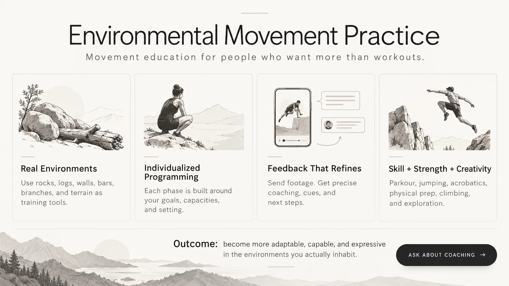
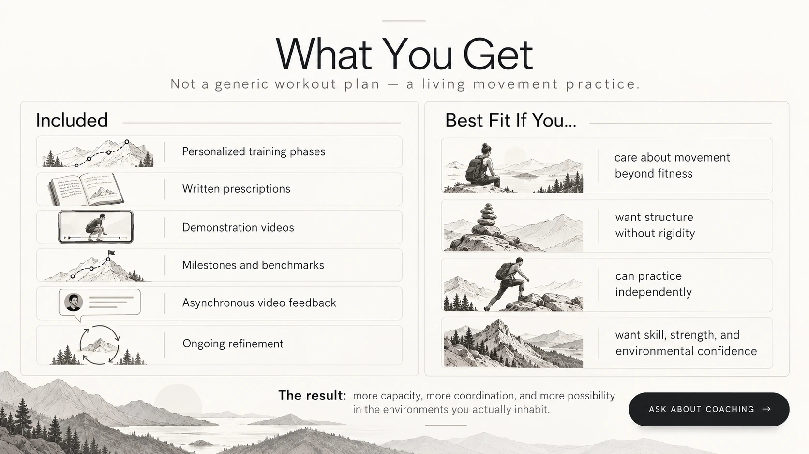
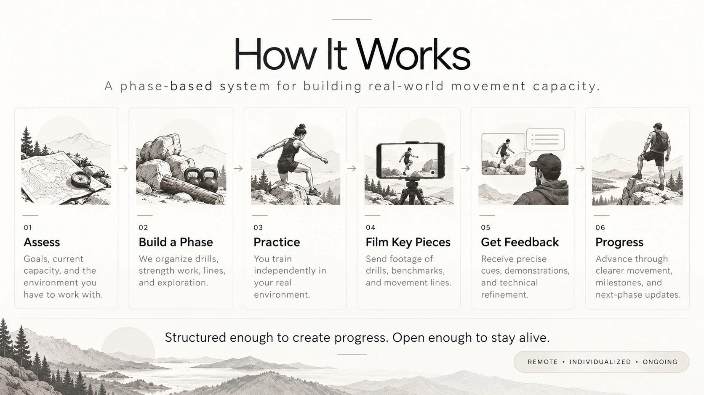

Predetermined exercises
The plan stays the same even when your movement, interests, or environment change.
EMPYour programming evolves from what actually shows up in practice.
Misha Lantsov & Ian · Individualized remote movement education
Build a body that can jump, climb, invert, adapt, and create — wherever you are.
Individualized remote coaching for people who want movement to become a practice, not another workout plan. We build your training around your body, your environment, and the skills you actually want to develop.
Individualized movement education built around real environments, physical capacity, technical skill, and creative exploration.

Ask About CoachingEnvironmental Movement Practice is a phase-based movement education system built around real environments, not controlled gym conditions alone.
We design individualized phases of work using the terrain, tools, and movement opportunities available to the student. A phase may include parkour tasks, jumping and landing drills, acrobatic work, strength and physical preparation, rolling, climbing, and more open creative exploration.
The student receives written prescriptions and demonstration videos, practices the material independently, and sends back footage of key drills, lines, and benchmarks. We review the footage, give precise feedback, adjust the constraints, and build the next step of the process.
This makes the practice structured without becoming rigid, and exploratory without becoming random.
Why this exists
Environmental Movement Practice was built for people who want structure, skill development, and progression without reducing movement to a list of exercises.
The plan stays the same even when your movement, interests, or environment change.
EMPYour programming evolves from what actually shows up in practice.
Training can become disconnected from the places you actually move through.
EMPRocks, logs, walls, branches, curbs, bars, slopes, and open space become part of the training.
Success is often measured by completing sets, reps, or sessions.
EMPWe develop skill, capacity, perception, adaptability, and creative options over time.

Ask About CoachingThis is not generic fitness programming, and it is not a static video library.
The work is built around the student’s actual environment, actual practice, and actual movement questions. It combines technical precision with creative exploration. It treats strength, skill, coordination, perception, and adaptability as connected. And it evolves through direct feedback rather than staying frozen as a one-size-fits-all plan.

We look at what the student has available: rocks, logs, walls, bars, branches, slopes, open space, and the current capacities and interests they bring to the work.
Each phase organizes the work into clear categories: technical drills, environmental tasks, strength work, movement lines, and exploratory practice.
You train independently in your real environment.
Film drills, benchmarks, and movement lines — the most revealing parts of the work.
We review the footage and respond with cues, corrections, demonstrations, and sometimes entirely new constraints that sharpen the task.
The work evolves through clearer movement, stronger positions, softer landings, better coordination, more environmental confidence, and milestone completion. Each round becomes the basis for the next phase.
Each round becomes the basis for the next phase.
What this looks like in real life
The strongest proof of the system is the practice itself: a student trains, sends us what is happening, receives precise feedback, and the next phase changes accordingly.
Recommended story: starting point → Phase 1 task → coach feedback → next submission → Phase 2 progression.
Publish student footage, quotes, or identifying details only with explicit permission.
What your practice might contain
These are not seven separate programs. They are domains we draw from according to the student, the phase, and the environment available.
Route finding, stepping patterns, environmental lines, obstacle negotiation, and the ability to move through built and natural spaces with clarity and adaptability.
Jump phases, precision jumps, landing mechanics, elastic rebounding, arm timing, trajectory control, and the ability to express force cleanly.
Wall-supported handstands, kickups, cartwheel catches, inversion shapes, shoulder organization, and free association through acrobatic patterns.
Whole-body strength work that supports skill expression: split squats, pushup variations, elastic strength tasks, loaded work, and later pulling and mantling capacity.
Forward rolls, contact organization, absorbing force through the body, and learning how the ground can become part of fluent movement rather than an interruption.
Using bars, rings, branches, rocks, and ledges to build pulling strength, climb onto the environment, mantle, descend with control, and expand what routes become possible.
Free association, rhythm work, dynamic variation, movement lines, and the ability to synthesize techniques into living movement rather than isolated drills.
Technical drills, strength work, environmental problems, lines, free exploration, and repeatable benchmarks all have a place.
Focused technical work used to sharpen one pattern or one quality at a time.
Physical preparation that builds the capacity to express movement more powerfully and more reliably.
Clear repeatable tasks that let us measure progress without reducing the whole practice to numbers.
Short sequences through the environment that connect multiple skills into a coherent route.
Open rounds where the student integrates material more creatively and reveals what is becoming natural.
Movement problems shaped by the terrain itself: a wall, a curb, a rock, a ledge, a branch, or a line through space.
Progress in this system is not abstract. Each phase can include simple milestones that make development visible.
Milestones are selected for the student and the phase of work.
Your coaches
EMP grew from a simple question: how do we give someone deep, individualized movement education when we are not physically in the same place?
We coach across physical preparation, environmental movement, parkour, acrobatics, body awareness, and movement exploration. Rather than sending a fixed program and disappearing, we stay involved in the student's practice: observing, refining, demonstrating, and changing the work as capacity develops.
Add concise training background / lineage here once you decide exactly what you want publicly emphasized for both coaches.
Remote · individualized · ongoing
Environmental Movement Practice is for people who want a deeper, more individualized relationship to movement — one that develops real capacity, real skill, and real adaptability in the environments they actually inhabit.
Tell us where you are, what you currently practice, what you want to become able to do, and what kind of environment you have access to.
Tell us about your practice